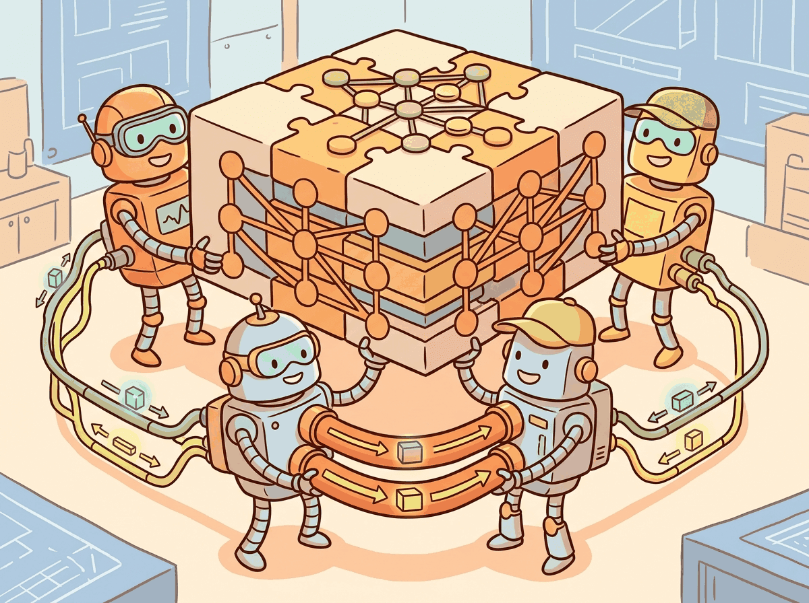

Training a large model on one GPU is like reading the entire internet through a keyhole. Distributed training lets you knock down the wall, provided all the GPUs agree on which wall and when.
Scale AI Agent
No single GPU can train a modern LLM. A 70B parameter model requires over 140 GB just for its parameters in FP16, far exceeding the memory of any single accelerator. Training such models demands distributing computation across dozens to thousands of GPUs, coordinating their work through high-speed interconnects. This section covers the four fundamental parallelism strategies (data, tensor, pipeline, and expert parallelism), the communication primitives that enable them, mixed-precision training (including FP8), and the memory optimization techniques that make large-scale training feasible. The GPU compute model from Section 4.4 explains why memory bandwidth, not raw FLOPS, is the binding constraint.
Prerequisites
This section assumes familiarity with PyTorch tensor operations from Section 0.2 and the transformer architecture from Chapter 04. Understanding of matrix multiplication is essential for the tensor parallelism discussion. The optimizer memory analysis from Section 6.5 motivates why distributed training is necessary.
1. Communication Primitives
Distributed training relies on collective communication operations to synchronize data between GPUs. Understanding these primitives is essential for reasoning about the communication overhead of different parallelism strategies.
| Primitive | Input | Output | Use Case |
|---|---|---|---|
| All-Reduce | Each GPU has a tensor | All GPUs have the sum | Gradient synchronization (DDP) |
| All-Gather | Each GPU has a shard | All GPUs have the full tensor | Parameter reconstruction (FSDP) |
| Reduce-Scatter | Each GPU has a tensor | Each GPU has a shard of the sum | Gradient sharding (FSDP) |
| Broadcast | One GPU has a tensor | All GPUs have it | Weight initialization |
These operations are implemented efficiently using ring or tree topologies. In a ring all-reduce with P GPUs, each GPU sends and receives $2(P-1)/P$ times the tensor size, giving near-optimal bandwidth utilization regardless of the number of GPUs. The NCCL library (NVIDIA Collective Communications Library) provides highly optimized implementations for NVIDIA GPUs.
Who: An ML infrastructure engineer at a mid-size AI company with access to a cluster of 32 A100 80GB GPUs across 4 nodes.
Situation: The team needed to train a 30B parameter model from scratch. The model weights alone required approximately 60 GB in FP16, and with optimizer states in FP32, total per-GPU memory would exceed 240 GB using standard data parallelism.
Problem: Pure data parallelism was impossible (model plus optimizer states exceeded single-GPU memory). Tensor parallelism required high-bandwidth interconnects, and their inter-node bandwidth was only 100 Gbps (InfiniBand HDR), much slower than intra-node NVLink.
Dilemma: Full 3D parallelism (data + tensor + pipeline) offered maximum flexibility but was complex to configure. FSDP (ZeRO-3) was simpler but added communication overhead for all-gather operations at every forward pass.
Decision: They used a hybrid approach: tensor parallelism of 4 within each node (leveraging fast NVLink), combined with FSDP across the 4 nodes (using the slower inter-node network only for gradient synchronization).
How: Tensor parallelism split each layer's weight matrices across 4 GPUs within a node, keeping all-reduce operations on NVLink. FSDP sharded optimizer states and gradients across the 4 node-groups, communicating via InfiniBand only during gradient reduction.
Result: The configuration achieved 42% Model FLOPs Utilization (MFU), compared to 28% MFU with FSDP alone and 51% MFU for a fully NVLink-connected setup. Training completed in 18 days instead of the projected 26 days with FSDP-only.
Lesson: Match your parallelism strategy to your network topology: use tensor parallelism within high-bandwidth domains (NVLink) and data/FSDP parallelism across slower interconnects to minimize communication bottlenecks.
2. Data Parallelism (DDP)

Training GPT-4 reportedly required tens of thousands of GPUs running in parallel for months. The electricity bill alone likely exceeded what it costs to run a small town for a year. "Scaling laws" sometimes feel less like scientific principles and more like a dare issued to the power grid.
Distributed Data Parallelism is the simplest and most widely used form of parallelism. Each GPU holds a complete copy of the model and processes a different subset of the training data. After each forward-backward pass, gradients are synchronized across all GPUs using all-reduce, ensuring that all copies perform identical parameter updates. Code Fragment 6.6.1 below puts this into practice.
# DDP training with PyTorch
import torch
import torch.distributed as dist
from torch.nn.parallel import DistributedDataParallel as DDP
def setup_ddp(rank, world_size):
dist.init_process_group("nccl", rank=rank, world_size=world_size)
torch.cuda.set_device(rank)
def train_ddp(rank, world_size, model_class):
setup_ddp(rank, world_size)
# Each GPU gets a full model copy
model = model_class().to(rank)
model = DDP(model, device_ids=[rank])
optimizer = torch.optim.AdamW(model.parameters(), lr=3e-4)
for batch in dataloader:
# Reset gradients from previous step
optimizer.zero_grad()
loss = model(batch)
# Compute gradients via backpropagation
loss.backward() # DDP auto-syncs gradients via all-reduce
# Update weights using computed gradients
optimizer.step()
dist.destroy_process_group()3. Fully Sharded Data Parallelism (FSDP) and ZeRO
DDP's limitation is that every GPU must hold a complete copy of the model, gradients, and optimizer states. For a 7B model with AdamW, that is ~112 GB per GPU. FSDP (and the equivalent DeepSpeed ZeRO) resolves this by sharding these tensors across GPUs so each GPU stores only a fraction. These sharding techniques are equally important during fine-tuning of large models (see Section 13.4).
ZeRO Optimization Stages
- Stage 1: Shard optimizer states only. Each GPU stores 1/P of the optimizer states but keeps full parameters and gradients. Memory savings: ~4x reduction in optimizer memory.
- Stage 2: Shard optimizer states and gradients. After the backward pass, gradients are reduce-scattered so each GPU holds only its shard. Memory savings: further ~2x reduction.
- Stage 3: Shard everything (optimizer states, gradients, and parameters). Parameters are gathered on-demand for each layer's forward and backward pass, then discarded. Memory savings: total memory per GPU is 1/P of the full model state.
FSDP Stage 3 trades communication for memory. Each layer's forward pass requires an all-gather to reconstruct the full parameters, and each backward pass requires a reduce-scatter of the gradients. This means each parameter is communicated 3 times per training step (gather for forward, gather for backward, reduce-scatter for gradient). The communication overhead is significant but acceptable when the alternative is not being able to train the model at all.
# FSDP training with PyTorch
from torch.distributed.fsdp import FullyShardedDataParallel as FSDP
from torch.distributed.fsdp import MixedPrecision, ShardingStrategy
# Mixed precision policy for FSDP
mp_policy = MixedPrecision(
param_dtype=torch.bfloat16,
reduce_dtype=torch.bfloat16,
buffer_dtype=torch.bfloat16,
)
# Wrap model with FSDP (full sharding = ZeRO Stage 3)
model = FSDP(
model,
sharding_strategy=ShardingStrategy.FULL_SHARD,
mixed_precision=mp_policy,
device_id=torch.cuda.current_device(),
)
# Training loop is identical to standard PyTorch
for batch in dataloader:
optimizer.zero_grad()
loss = model(batch)
loss.backward()
optimizer.step()4. Tensor Parallelism
Tensor parallelism splits individual layers across GPUs. For a linear layer $Y = XW$, the weight matrix W can be split along its columns (column parallelism) or rows (row parallelism). Each GPU computes a portion of the output, and an all-reduce or all-gather combines the partial results.
Column Parallelism
Split W into columns: $W = [W_{1} | W_{2}]$. GPU 0 computes $XW_{1}$, GPU 1 computes $XW_{2}$. The results are concatenated, requiring no communication in the forward pass (but an all-reduce in the backward pass). This is typically used for the first linear layer in the feed-forward network.
Row Parallelism
Split W into rows. Each GPU processes a different slice of the input. The partial outputs are summed via all-reduce in the forward pass. This is typically used for the second linear layer in the feed-forward network.
In Megatron-LM style parallelism, column and row parallelism are combined so that the MLP block requires only one all-reduce in the forward pass and one in the backward pass. Tensor parallelism requires very fast interconnects (NVLink within a node) because communication happens at every layer. These same parallelism strategies are also essential for inference serving at scale, as discussed in Section 8.4.
Consider a feed-forward layer with input X (batch=2, d=4) and weight W (4x8), split across 2 GPUs:
GPU 0: $W_{0}$ = first 4 columns of W (4x4). Computes $Y_{0}$ = X · $W_{0}$, producing a (2x4) result.
GPU 1: $W_{1}$ = last 4 columns of W (4x4). Computes $Y_{1}$ = X · $W_{1}$, producing a (2x4) result.
Combine: Y = [$Y_{0}$ | $Y_{1}$] via concatenation (no communication needed). Each GPU did half the work, and the result is identical to a single GPU computing Y = X · W. The catch: the backward pass requires an all-reduce to sum gradients across GPUs.
Think of distributed training strategies as ways to organize a factory. Data parallelism is like opening duplicate factories that each build complete products from different orders. Tensor parallelism is like splitting each workstation across two workers who each handle half the parts. Pipeline parallelism is like an assembly line where each station does one step. Expert parallelism is like a specialized factory floor where different workers handle different product types, and a router directs each order to the right specialist.
5. Pipeline Parallelism
Pipeline parallelism assigns different layers of the model to different GPUs. GPU 0 runs layers 0-15, GPU 1 runs layers 16-31, and so on. The input flows through the pipeline, with each GPU passing its output to the next.
The naive approach has a severe pipeline bubble problem: while GPU 0 is processing the forward pass, GPUs 1-3 are idle, and while GPU 3 is processing the backward pass, GPUs 0-2 are idle. The 1F1B (one forward, one backward) schedule mitigates this by splitting each batch into micro-batches and interleaving forward and backward passes across micro-batches. This keeps all GPUs active most of the time, though a small bubble remains at the beginning and end of each batch.
6. Mixed Precision Training
Mixed precision reduces memory usage and increases throughput by using lower-precision number formats for most computations while keeping critical accumulations in higher precision.
| Format | Bits | Range | Use Case |
|---|---|---|---|
| FP32 | 32 | Very large | Master weights, loss accumulation |
| FP16 | 16 | Limited (needs loss scaling) | Older GPUs (V100) |
| BF16 | 16 | Same as FP32 | Standard for modern training |
| FP8 (E4M3) | 8 | Limited | Forward pass activations (Hopper+) |
| FP8 (E5M2) | 8 | Wider range, less precision | Gradients (Hopper+) |
FP8 Training at Scale
DeepSeek V3 (covered in Section 7.2) demonstrated successful FP8 mixed-precision training at 671B parameters, the first large-scale demonstration of FP8 for LLM pre-training. The approach uses E4M3 format for forward pass activations (more precision, narrower range) and E5M2 for gradients (wider range, less precision). Per-tensor dynamic scaling factors are maintained to prevent overflow and underflow. FP8 training provides roughly 2x memory reduction and higher throughput compared to BF16 with minimal quality degradation.
7. Gradient Checkpointing
During the backward pass, computing gradients requires the activations from the forward pass. Normally all activations are stored in memory, consuming enormous amounts of GPU memory (proportional to batch size, sequence length, and hidden dimension). Gradient checkpointing (also called activation checkpointing) saves memory by storing only a subset of activations and recomputing the rest during the backward pass. The tradeoff is approximately 33% additional compute in exchange for a large reduction in activation memory. Code Fragment 6.6.3 below puts this into practice.
# Gradient checkpointing in PyTorch
from torch.utils.checkpoint import checkpoint
class CheckpointedTransformer(nn.Module):
def __init__(self, layers):
super().__init__()
self.layers = nn.ModuleList(layers)
def forward(self, x):
for layer in self.layers:
# Recompute activations during backward instead of storing
x = checkpoint(layer, x, use_reentrant=False)
return x
# Memory comparison
seq_len, hidden, num_layers, batch = 2048, 4096, 32, 8
bytes_per_elem = 2 # BF16
# Without checkpointing: store all layer activations
no_ckpt = batch * seq_len * hidden * num_layers * bytes_per_elem
# With checkpointing: store only input to each checkpointed segment
with_ckpt = batch * seq_len * hidden * 1 * bytes_per_elem # only 1 activation
print(f"Activation memory without checkpointing: {no_ckpt / 1e9:.1f} GB")
print(f"Activation memory with checkpointing: {with_ckpt / 1e9:.2f} GB")
print(f"Memory saved: {(1 - with_ckpt/no_ckpt)*100:.0f}%")Expert Parallelism for MoE Training
Mixture-of-Experts models introduce a parallelism dimension that dense models do not have: expert parallelism. In an MoE layer, each token is routed to a small subset of experts (typically 1 or 2 out of dozens or hundreds). Expert parallelism distributes the experts themselves across GPUs, so that each GPU hosts a different subset of the expert FFN blocks. When a token is routed to an expert that lives on another GPU, an all-to-all communication operation transfers the token's hidden state to the appropriate device, and the result is sent back after computation.
The communication pattern differs fundamentally from tensor parallelism. In tensor parallelism, every GPU participates in computing every token (splitting the matrix multiply). In expert parallelism, each GPU only computes the tokens routed to its local experts. This means the amount of computation per GPU varies depending on how the router distributes tokens, making load balancing critically important. If one expert receives disproportionately many tokens, the GPU hosting that expert becomes the bottleneck while others sit idle.
DeepSeek-V3 provides a detailed case study. With 256 routed experts and 1 shared expert, the experts are distributed across GPUs such that each GPU hosts a manageable subset. DeepSeek-V3 uses an auxiliary-loss-free load balancing mechanism with a per-expert bias term that the system adjusts dynamically during training to maintain even expert utilization. This avoids the traditional auxiliary loss approach, which adds a balancing penalty to the training objective and can distort the learning signal. The all-to-all communication is overlapped with computation by pipelining the expert dispatch: while one micro-batch's tokens are being routed and computed on remote experts, the next micro-batch's routing decisions are already being made.
In practice, expert parallelism is combined with the other strategies. A typical configuration for training a large MoE model on 256 GPUs might use tensor parallelism of 8 within each node, expert parallelism of 8 across nodes within a pod, and data parallelism of 4 across pods. The key constraint is that expert parallelism requires all-to-all communication, which has higher latency than the all-reduce used in data parallelism. Placing expert parallelism on a network tier with sufficient bandwidth (typically InfiniBand HDR or better) is essential. As models scale to hundreds or thousands of experts, expert parallelism has become the fourth essential dimension of the "4D parallelism" strategy used in modern large-scale training.
8. Combining Parallelism Strategies
Real-world large-scale training combines multiple parallelism strategies in a hierarchy. A common configuration for training a 70B model on 512 GPUs might use tensor parallelism with degree 8 within each node (leveraging fast NVLink), pipeline parallelism with degree 8 across nodes, and data parallelism with degree 8 across pipeline-parallel groups. This 3D parallelism approach matches each strategy to the communication bandwidth available at each level of the hardware hierarchy.
The choice of parallelism strategy depends on the hardware topology. Tensor parallelism demands the highest bandwidth and should use intra-node NVLink (600 GB/s on H100). Pipeline parallelism can tolerate lower bandwidth and can span nodes connected via InfiniBand (400 Gb/s). Data parallelism is the most bandwidth-efficient and can span the widest network distances.
As context windows grow to 128K tokens and beyond, a single sequence's activations may not fit in one GPU's memory. Sequence parallelism splits the sequence dimension across GPUs, with each GPU processing a contiguous chunk of the sequence. Context parallelism (also called ring attention) takes this further by distributing the key-value pairs of attention computation across GPUs in a ring topology, enabling each GPU to attend to the full context without materializing all KV pairs locally. These techniques are increasingly important for training long-context models and are used by Llama 3 and other recent systems. For more on these models, see Section 7.2.
9. Ring Attention and Sequence Parallelism for Long-Context Training
The push toward million-token context windows has made sequence-dimension parallelism a critical fourth axis of distributed training, alongside data, tensor, and pipeline parallelism. Standard self-attention requires materializing an attention matrix of size $L \times L$ (where L is the sequence length), which grows quadratically. For a 128K-token sequence, this matrix alone would require over 60 GB of memory in FP32, exceeding the capacity of any single GPU. Sequence parallelism and ring attention solve this by distributing the sequence dimension across multiple devices.
Sequence Parallelism: Splitting the Sequence
Sequence parallelism partitions each input sequence into contiguous chunks, assigning each chunk to a different GPU. For non-attention operations (feed-forward layers, normalization, embedding lookups), this is straightforward because these operations process each token independently. The challenge arises with self-attention, where every token must attend to every other token. Naive partitioning would require each GPU to receive the full key-value (KV) pairs from all other GPUs at every attention layer, introducing prohibitive communication overhead. Megatron-LM's sequence parallelism (Korthikanti et al., 2022) addressed this for the non-attention components of transformer layers, splitting LayerNorm and dropout operations along the sequence dimension. This alone saves significant activation memory, as dropout masks and normalization statistics scale linearly with sequence length.
Ring Attention: Communication-Efficient Long Context
Ring Attention (Liu et al., 2023) provides an elegant solution for distributing the attention computation itself. The core idea is to arrange GPUs in a logical ring and overlap attention computation with communication. Each GPU holds a chunk of the query (Q) tokens permanently and receives key-value (KV) chunks from its neighbors in a round-robin fashion. The algorithm proceeds in P steps (where P is the number of GPUs in the ring):
- Each GPU computes attention between its local Q chunk and its local KV chunk.
- While computing, each GPU asynchronously sends its KV chunk to the next GPU in the ring and receives a KV chunk from the previous GPU.
- In the next step, each GPU computes attention between its local Q and the newly received KV chunk.
- After P steps, every Q chunk has attended to every KV chunk, and the attention output is complete.
The key insight is that the communication of KV chunks is overlapped with the computation of attention, hiding the communication latency behind the compute. With modern interconnects (NVLink at 900 GB/s on H100, InfiniBand at 400 Gb/s), the communication can be fully hidden as long as the per-chunk compute time exceeds the transfer time. In practice, this holds for chunks of 4K tokens or larger on H100 GPUs. The memory per GPU is reduced from $O(L^{2})$ to $O(L^{2}/P)$ for the attention matrix, and $O(L/P)$ for KV storage, enabling linear memory scaling with the number of ring participants.
Striped Attention and Hybrid Approaches
A limitation of basic ring attention is load imbalance when using causal (autoregressive) attention masks. Because causal attention is triangular (token i attends only to tokens 1 through i), GPUs holding later chunks do more work than those holding earlier chunks. Striped Attention (Brandon et al., 2023) addresses this by distributing tokens in an interleaved (striped) pattern rather than contiguous blocks: GPU 0 gets tokens 0, P, 2P, ...; GPU 1 gets tokens 1, P+1, 2P+1, ...; and so on. This ensures each GPU processes roughly equal amounts of causal attention work, improving utilization from approximately 50% (for contiguous chunking with causal masks) to near 100%.
Meta's Llama 3 training (2024) used a hybrid approach that combined ring attention (called "context parallelism" in their terminology) with tensor parallelism and data parallelism for training on sequences up to 128K tokens. Their implementation placed the ring attention ring within a single node's 8 GPUs (leveraging NVLink bandwidth), while using tensor parallelism across nodes and data parallelism across node groups. This hierarchical design matches communication intensity to available bandwidth at each level. DeepSeek-V2 and Qwen 2.5 employed similar strategies for their long-context training phases.
HuggingFace Accelerate wraps PyTorch distributed training so the same script runs on 1 GPU or many.
# pip install accelerate
from accelerate import Accelerator
accelerator = Accelerator(mixed_precision="bf16")
# Wrap model, optimizer, and dataloader in one call
model, optimizer, dataloader = accelerator.prepare(
model, optimizer, dataloader
)
for batch in dataloader:
outputs = model(**batch)
loss = outputs.loss
accelerator.backward(loss)
optimizer.step()
optimizer.zero_grad()
# Launch with: accelerate launch --num_processes 4 train.py
DeepSpeed enables ZeRO Stage 3 sharding with a simple JSON config file.
# pip install deepspeed
# deepspeed_config.json:
# {
# "bf16": {"enabled": true},
# "zero_optimization": {"stage": 3, "offload_param": {"device": "cpu"}},
# "train_batch_size": 32,
# "gradient_accumulation_steps": 4
# }
# Launch training:
# deepspeed train.py --deepspeed deepspeed_config.json
# Or use with HuggingFace Accelerate:
# accelerate launch --use_deepspeed \
# --deepspeed_config_file deepspeed_config.json train.py
Practical Considerations
When implementing sequence parallelism for long-context training, several practical considerations apply. First, ring attention typically requires that the sequence length is evenly divisible by the ring size; padding shorter sequences wastes compute proportionally. Second, position encodings (particularly RoPE) must be consistent across the distributed sequence: each GPU must use the correct positional indices for its assigned tokens, not indices starting from zero. Third, the gradients for attention computations across the ring require careful accumulation during the backward pass, as each partial attention result must be combined with the correct log-sum-exp normalization factors to produce numerically stable softmax gradients. Frameworks like Megatron-LM and DeepSpeed-Ulysses provide production-ready implementations of these techniques, while the Llama 3 training code release includes Meta's context parallelism implementation for reference.
Check Your Understanding
Show Answer
Show Answer
Show Answer
Show Answer
At its core, distributed training is a communication problem, not a computation problem. Every parallelism strategy (data, tensor, pipeline) trades off computation for communication in different ways, and the optimal strategy depends on the ratio of compute speed to interconnect bandwidth. This mirrors a fundamental result from parallel computing theory: Amdahl's law says that the speedup from parallelization is limited by the sequential fraction of the workload, and in distributed training, communication is the sequential bottleneck. The progression from DDP to FSDP to 3D parallelism is essentially an engineering journey to minimize the communication-to-computation ratio. This is also why hardware co-design matters: NVIDIA's NVLink, InfiniBand, and most recently NVSwitch exist specifically to push the communication bottleneck further out. The same principle appears in Section 8.4, where inference serving frameworks must solve the same communication-computation tradeoff at deployment time.
Key Takeaways
- DDP is the simplest distributed training approach: replicate the model on each GPU and synchronize gradients via all-reduce.
- FSDP/ZeRO shards parameters, gradients, and optimizer states across GPUs to reduce per-GPU memory, enabling training of much larger models.
- Tensor parallelism splits individual layers across GPUs and requires fast intra-node interconnects (NVLink).
- Pipeline parallelism assigns different layers to different GPUs; the 1F1B schedule minimizes idle time.
- BF16 is the standard precision for LLM training; FP8 (demonstrated by DeepSeek V3) provides further memory and throughput improvements on Hopper GPUs.
- Gradient checkpointing trades ~33% extra compute for massive activation memory savings.
- Real-world training uses 3D parallelism, combining tensor, pipeline, and data parallelism to match hardware topology.
Disaggregated training and heterogeneous clusters. Traditional distributed training assumes homogeneous GPU clusters connected by fast interconnects. Emerging approaches disaggregate computation, allowing training across heterogeneous hardware and even geographically distributed data centers. Ring attention (Liu et al., 2024) enables training on sequences longer than any single GPU's memory by distributing attention computation across a ring of devices. Meanwhile, FP4 training experiments (building on DeepSeek V3's FP8 success) promise further memory and communication savings, potentially enabling pre-training of 100B+ models on fewer GPUs than currently required.
What's Next?
In the next section, Section 6.7: In-Context Learning Theory, we investigate in-context learning theory, understanding why LLMs can adapt to new tasks from just a few examples.
Introduces the ZeRO family of optimizations that partition optimizer states, gradients, and parameters across GPUs. The foundation of DeepSpeed and the technique that makes training models larger than single-GPU memory feasible.
Presents efficient tensor parallelism strategies that split individual layers across GPUs within a node. The go-to reference for understanding how attention heads and MLP columns are distributed in practice.
Combines tensor, pipeline, and data parallelism (3D parallelism) to scale to thousands of GPUs. Provides practical guidance on how to compose parallelism strategies and achieve high hardware utilization.
Micikevicius, P. et al. (2018). "Mixed Precision Training." ICLR 2018.
Establishes the mixed-precision training recipe using FP16 forward/backward passes with FP32 master weights and loss scaling. Now a standard practice that roughly doubles training throughput on modern GPUs.
Documents the design and production experience of PyTorch's native FSDP implementation. Covers practical trade-offs between sharding strategies, communication overhead, and memory savings for practitioners using the PyTorch ecosystem.
Simplifies mixture-of-experts routing to a single-expert selection, enabling training of trillion-parameter sparse models. Demonstrates that expert parallelism provides an additional scaling dimension beyond dense model parallelism.